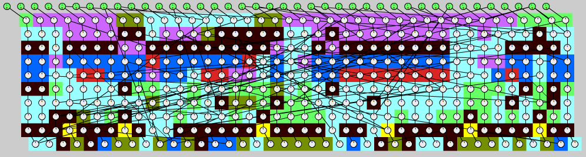
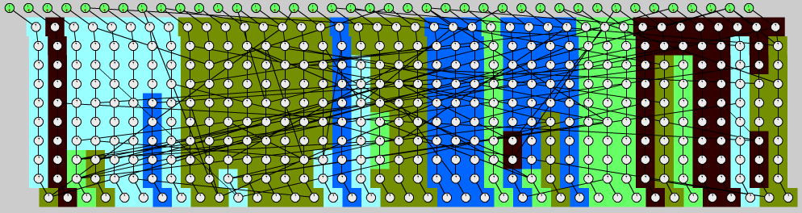
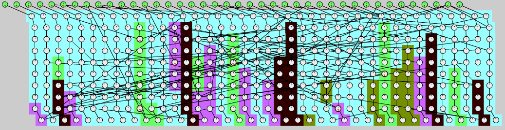

Propagation engines
The update propagation strategy is implemented by a propagation engine.
There are different algorithms available, which are described in detail in the following articles:
Single-threaded propagation with minimum overhead. Also supports parallelization.
Scalable parallel updating at the cost of additional overhead.
A hybrid approach between single-threaded Toposort and Pulsecount to balance overhead and parallel utilization.
Quick comparison
We’ll show how the engines behave based on two examples.
Example 1
A 100x100 matrix of signals, where A[i][j] = A[i-1][j] + A[i][j-1]. Out-of-bounds cells are replaced by zero.
A[0][0] is the single input node that can be manipulated imperatively.
We measure the execution time (seconds) of A[0][0] <- 1 ... 10000, i.e. 10K updates of the whole graph, on 8 CPUs.
Results
Sequential Toposort
1.65093
Parallel Toposort
4.6614
Subtree
2.7457 (= CPU time)
Pulsecount
2.3803 (CPU time: ~ 8x on 8 CPUs)
In cases where the workload per node is minimal - i.e. a single addition - the parallelization overhead will outweight its benefits.
This is not necessarily surprising, because both the updating itself and sequential Toposort are fairly lightweight;
it’s hard to beat them with the kind of high-level parallelization this library provides.
Among the parallel algorithms, Pulsecount is the fastest, but only by fully utilizing all available parallel ressources.
Subtree supports on-demand parallelism for heavyweight nodes, so in this scenario, it reverts to purely single-threaded updating.
It does so less efficiently than the purely single-threaded algorithm, but in terms of combined CPU time, it is still much more efficient than Pulsecount.
Example 2
A synthetic 20x10 graph with a parallelizable base structure and random additional edges.
20% of the nodes are heavyweight (~1ms busy waiting per update), others are trivial arithmetic operations.
We measure the execution time (seconds) of 100 updates of the whole graph on 8 CPUs.
Results
Sequential Toposort
3.9997
Parallel Toposort
1.049
Subtree
0.7666
Pulsecount
0.6458
The execution time is dominated by heavyweight updates and the parallel strategies provide a performance gain.
The agglomeration patterns for the graph, extended to 40x10 nodes, can be seen here (color indicates the updating thread):
Parallel Toposort:

The algorithm divides the graph in horizontal layers and parallelizes each layer with a parallel_for.
Pulsecount:

The graph is divided into chunks; lightweight nodes form larger chunks.
Subtree:

In a first pass, lightweight nodes are updated sequentially and subtrees with heavyweight nodes are marked and ignored.
Then, the heavyweight subtrees are updated in parallel.
Conclusion
For strictly lightweight operations, sequential Toposort is usually the best choice.
Pulsecount uses the most effective parallelization scheme, but it requires a certain number of heavyweight nodes for it to pay off.
Subtree first tries to apply sequential Toposort for all lightweight nodes, then uses the Pulsecount algorithm for the rest.
There are cases where each purebreed strategy beats the hybrid one, but the latter generally provides a good balance for most scenarios.
 Hold
Hold WeightHint
WeightHint Continuation
Continuation REACTIVE_DOMAIN
REACTIVE_DOMAIN